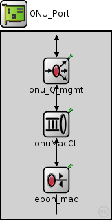
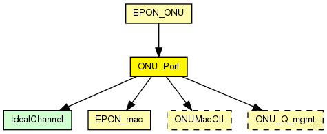

This documentation is released under the Creative Commons license
This documentation is released under the Creative Commons licenseTODO auto-generated module
The following diagram shows usage relationships between types. Unresolved types are missing from the diagram. 
The following diagram shows inheritance relationships for this type. Unresolved types are missing from the diagram.
If a module type shows up more than once, that means it has been defined in more than one NED file.
| EPON_ONU (compound module) |
TODO auto-generated module |
| Name | Type | Default value | Description |
|---|---|---|---|
| QMgmtUnit | string | "ONU_QPL_RR" | |
| MacCtlModule | string | "ONUMacCtl_NP" |
| Name | Value | Description |
|---|---|---|
| display | i=block/ifcard;bgb=159,272 |
| Name | Direction | Size | Description |
|---|---|---|---|
| netwIn | input | ||
| netwOut | output | ||
| phys | inout |
| Name | Type | Default value | Description |
|---|---|---|---|
| epon_mac.address | string | "auto" |
MAC address as hex string (12 hex digits), or "auto". "auto" values will be replaced by a generated MAC address in init stage 0. |
| epon_mac.txQueueLimit | int | 2 |
maximum number of frames queued up for transmission; additional frames are dropped. Only used if queueModule=="" The 2nd frame is used in case of changing registers with MPCP ... sometimes 1 is already transmitted and the next MPCP decides to transmitt again with the new times. |
| epon_mac.queueModule | string | "" |
name of optional external queue module |
| epon_mac.mtu | int | 1500 | |
| onu_Q_mgmt.regTimeOut | int | ||
| onu_Q_mgmt.queueLimit | int | ||
| onu_Q_mgmt.statsGranularity | double |
// // TODO auto-generated module // module ONU_Port { parameters: string QMgmtUnit = default("ONU_QPL_RR"); string MacCtlModule = default("ONUMacCtl_NP"); @display("i=block/ifcard;bgb=159,272"); gates: input netwIn; output netwOut; inout phys; submodules: onuMacCtl: <MacCtlModule> like ONUMacCtl { @display("p=80,135"); } epon_mac: EPON_mac { @display("p=80,216;i=block/rxtx"); promiscuous = true; } onu_Q_mgmt: <QMgmtUnit> like ONU_Q_mgmt { @display("p=80,57"); } connections: epon_mac.upperLayerOut --> onuMacCtl.lowerLayerIn; onuMacCtl.lowerLayerOut --> epon_mac.upperLayerIn; onu_Q_mgmt.lowerLayerOut --> onuMacCtl.upperLayerIn; onu_Q_mgmt.upperLayerOut --> netwOut; epon_mac.phys <--> phys; onuMacCtl.upperLayerOut --> onu_Q_mgmt.lowerLayerIn; netwIn --> onu_Q_mgmt.upperLayerIn; }
This documentation is released under the Creative Commons license